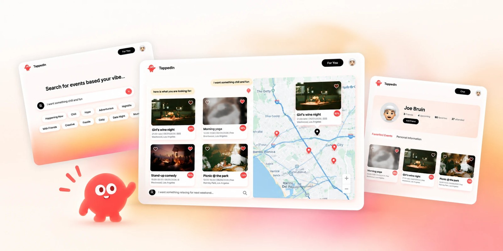
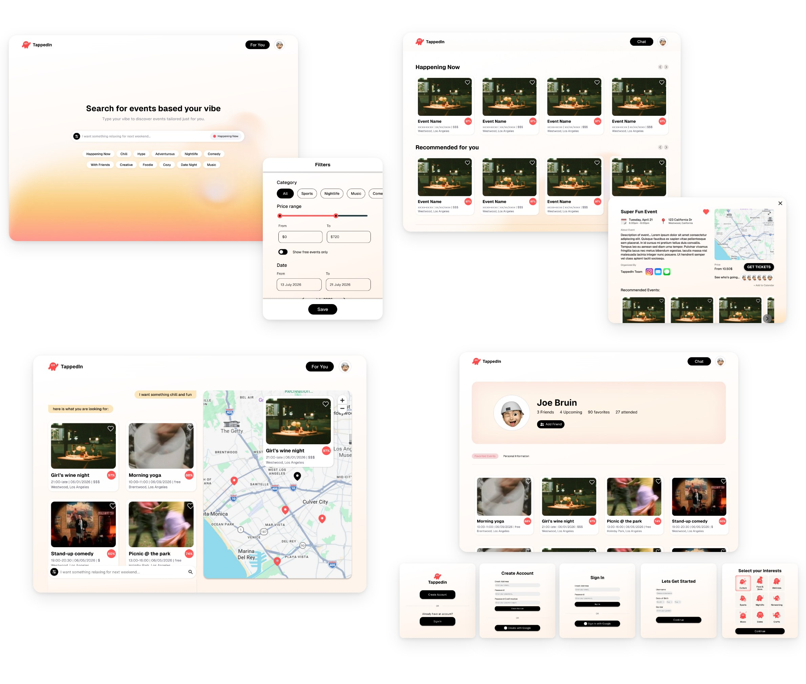
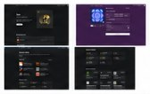
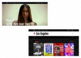
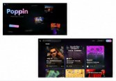
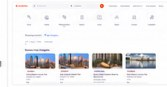
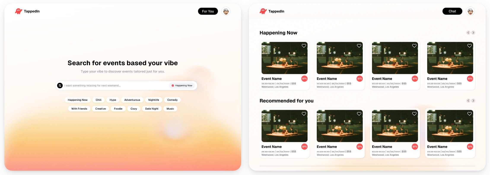
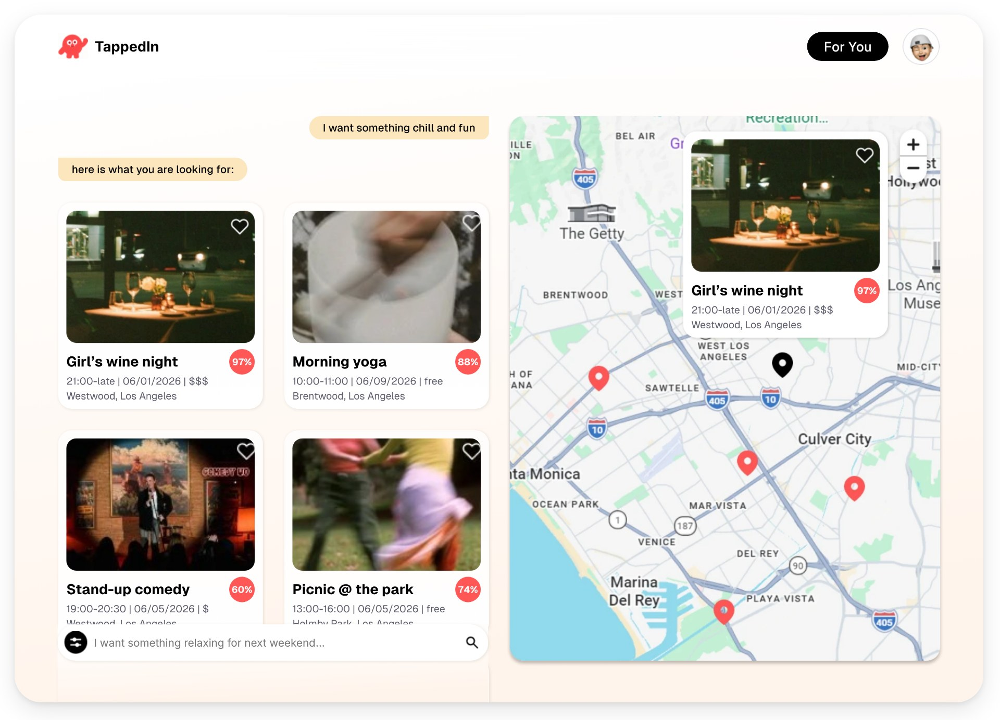
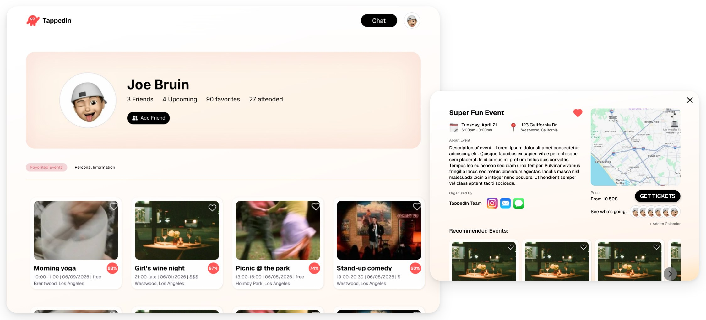

TappedIn — Agentic Event Discovery Platform
TappedIn is an AI-powered event discovery platform that centralizes local events into one personalized experience. I designed the brand identity and end-to-end user interface to make discovering events feel effortless and engaging.

Context
Finding events is fragmented. Finding something to do means jumping between Instagram, Eventbrite, group chats, and Google. Existing platforms are good at listing events, but not at answering the simpler question: “What should I do this weekend?”
TappedIn started with one goal: make finding something to do feel as easy as asking a friend.
Final design
A real-time AI agent that tailors event recommendations to whatever you’re feeling in the moment.

Key design moments
01 AI search as the landing page, with filters beside it
We looked at how Gen Z event platforms handle discovery, search, curation, and personalization. Most of them felt overwhelming, and the cause was the same each time: a cluttered page of recommended listings.
| DescriptionWhat is this app? | Identify FeaturesWhat features does this app have? | Unique Value PropositionWhat makes this app unique? | Company DisadvantagesWhere might drawbacks exist? | ScreenshotsWhat does the app look like? | What We LikeWhich aspect of this app do we like? | |
|---|---|---|---|---|---|---|
| Luma |
|
| Centralize all factors needed for events
Most modern and up to date platform
|
|  |
|
| ra.co |
|
|
|
|  |
|
| Poppin |
|
|
|
|  |
|
| Eventbrite |
|
|
|
|  |
|
The tension. The engineers wanted a chat-only product. The designers wanted room to browse and discover.
What we chose. The AI search bar leads, so people can start with their mood, budget, location, or plans in their own words. Manual filters sit right beside it, and twelve mood prompts replace a blank prompt box. The For You page stays one tap away for people who would rather browse.
Why. Intentional search is TappedIn’s advantage, but a blank chat box asks people to know what they want. The prompts and filters give them a place to start.

02 Show where events are happening
A list makes events easy to compare. A map makes them easy to plan around. Instead of choosing one, I combined both in a split screen, so people can browse recommendations while seeing where each event is happening around them.
Split screen filters
- Category: Music, Food & Drink, Art & Culture, Nightlife, Comedy, Wellness, Networking
- Time / Date: custom date picker; time of day (Morning, Afternoon, Night)
- Price: Free; custom range ($)
- Distance / Location: Near me, <1 mile, <5 miles, <10 miles, specific areas (Westwood, DTLA)
- Special tags: Outdoor, Indoor, 21+, Family-friendly, Limited spots, Pop-up, Free perks

03 One event card for ten-plus sources
Events come from more than ten scraped sources, each with different fields and image quality. One card component had to hold all of them, and every card shows a match score for the search.
Every card shows
- Hero image
- Save button
- Event title
- Date and time
- Relative time (“Tonight”, “Tomorrow”)
- Location (venue name, neighborhood)
- Free / paid label
- Match score
04 Make it social
Events are inherently social, so I didn’t want TappedIn to feel like another ticket marketplace. Profiles let people save events, see what they’ve attended, connect with friends, and discover plans through people they know.

Impact
- Planned features shipped on the quarter deadline
- 13 of 15
- Signups at our demo booth
- 100+
- Event sources on one map
- 10+
We launched on the quarter deadline with 13 of the 15 features we planned. The calendar and friends’ events were cut to make the date.
The demo booth drew more than 100 signups. Then the AI search failed during the live demo. We took the app offline afterward to polish it before putting it back in front of people.
Reflection
The MVP proved the core experience, but personalization gets better with use.
Next, I’d focus on learning from saves, clicks, attendance, searches, and friend activity so recommendations become more relevant over time.